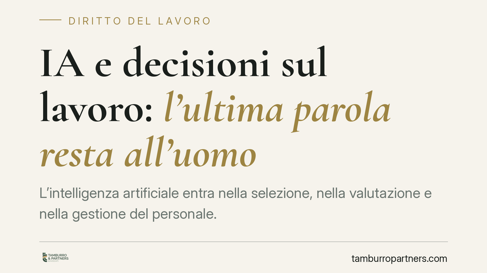

IA e decisioni sul lavoro: l'ultima parola resta all'uomo
L'intelligenza artificiale entra nella selezione, nella valutazione e nella gestione del personale. Ma può un algoritmo decidere da solo un licenziamento o una sanzione? La normativa già in vigore pone limiti precisi: i sistemi automatizzati assistono, non sostituiscono la decisione umana. Vediamo quali regole si applicano oggi e come muoversi, senza inseguire norme non ancora verificabili.

Il tema: algoritmi che pesano sul rapporto di lavoro
Sistemi di intelligenza artificiale sono ormai impiegati per filtrare curricula, valutare performance, calcolare rischi di assenteismo, gestire turni e produttività. La domanda giuridica centrale è una sola: fino a che punto una macchina può incidere su decisioni che toccano il posto di lavoro?
Circolano notizie su futuri interventi normativi dedicati all'IA nel lavoro. Allo stato, prima di fondare qualsiasi analisi su un singolo decreto occorre verificarne esistenza, numero ed entrata in vigore su fonti ufficiali (Gazzetta Ufficiale, Normattiva). Per questo ancoriamo il discorso alla disciplina già vigente e verificabile, che offre tutele solide a prescindere da riforme annunciate.
Inquadramento normativo: cosa dice il diritto già in vigore
Il primo riferimento è l'art. 22 del Regolamento UE 2016/679 (GDPR). La norma riconosce all'interessato il diritto di non essere sottoposto a una decisione basata unicamente su un trattamento automatizzato che produca effetti giuridici o incida in modo analogamente significativo sulla sua persona. In ambito lavoro, un licenziamento o una sanzione rientrano senza dubbio tra le decisioni a effetto significativo. Le eccezioni previste (consenso, necessità contrattuale, legge) impongono comunque garanzie, tra cui il diritto a ottenere l'intervento umano, a esprimere la propria opinione e a contestare la decisione.
Si aggiunge il Decreto Trasparenza (D.Lgs. 104/2022), che ha modificato il D.Lgs. 152/1997 introducendo gli artt. 1-bis e 1-ter. Il datore deve informare il lavoratore circa l'utilizzo di sistemi decisionali o di monitoraggio automatizzati destinati a incidere su assunzione, gestione del rapporto, assegnazione di compiti, sorveglianza, valutazione e cessazione. Un difetto informativo può costituire condotta antisindacale e fondare contestazioni.
Infine, il Regolamento UE 2024/1689 (AI Act) classifica come ad alto rischio i sistemi di IA usati per reclutamento, selezione, decisioni su promozione e cessazione del rapporto, nonché per il monitoraggio delle prestazioni. Per tali sistemi sono previsti obblighi di trasparenza, documentazione e, soprattutto, di sorveglianza umana effettiva.
Il principio: l'IA assiste, l'uomo decide
Il filo conduttore è chiaro: l'algoritmo può istruire, suggerire, segnalare. La decisione finale su assunzione, sanzione disciplinare, valutazione o licenziamento deve restare frutto di un giudizio umano effettivo, non di una ratifica formale di un output automatico.
La differenza non è teorica. Un intervento umano reale presuppone che chi decide disponga delle informazioni per valutare criticamente il risultato del sistema, abbia il potere e la competenza di discostarsene, e lasci traccia del percorso seguito. Un "clic di conferma" apposto senza analisi è un'automazione mascherata.
Conseguenze: attenzione agli automatismi sulle sanzioni
Sul piano del licenziamento, va evitata ogni lettura semplificata. Nel nostro ordinamento le conseguenze di un licenziamento viziato variano a seconda del tipo di vizio e del regime applicabile (L. 300/1970 art. 18 come riformato dalla L. 92/2012, oppure D.Lgs. 23/2015 per gli assunti dal 7 marzo 2015). Non esiste un'equazione automatica tra irregolarità procedurale e reintegrazione.
Ciò che si può affermare con fondamento è che una decisione assunta in violazione delle garanzie su trattamenti automatizzati espone il datore a contestazioni sotto molteplici profili: illegittimità del provvedimento, violazione degli obblighi di trasparenza, trattamento illecito dei dati. In giudizio, pesa l'onere di dimostrare che la decisione è stata realmente umana e non meramente delegata al software.
Il raccordo con privacy e AI Act
I tre piani si intrecciano. Il GDPR protegge l'interessato dalle decisioni interamente automatizzate; il Decreto Trasparenza impone di dichiararne l'uso; l'AI Act disciplina i sistemi stessi come prodotti ad alto rischio. Chi gestisce personale con strumenti di IA deve ragionare in modo integrato su tutti e tre, perché una lacuna su un fronte apre contestazioni sugli altri.
Cosa fare in concreto
Se sei datore di lavoro:
- Mappa i sistemi automatizzati in uso e verifica se incidono su selezione, valutazione, disciplina o cessazione.
- Garantisci un intervento umano effettivo e documentato: chi decide deve poter accedere ai dati, valutarli e discostarsi dal risultato dell'algoritmo.
- Adempi agli obblighi informativi del Decreto Trasparenza verso lavoratori e rappresentanze sindacali.
- Conserva la tracciabilità del processo decisionale: log, motivazioni, soglie di intervento umano.
Se sei lavoratore:
- Chiedi se e come vengono usati sistemi automatizzati che ti riguardano, esercitando i diritti di accesso e informazione.
- Conserva comunicazioni e provvedimenti che sembrino standardizzati o privi di motivazione individuale.
Disclaimer
Contributo informativo a cura di Tamburro & Partners - Avv. Giuseppe Tamburro. Non costituisce parere legale.
Ogni storia di lavoro ha i suoi tempi.
Se gestisci HR e vuoi un confronto su contenzioso, ispezioni o licenziamenti, scrivi allo studio. Ti rispondiamo entro un giorno lavorativo.